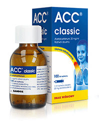
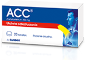
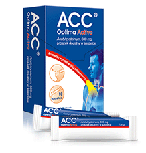

Nr 1
na kaszel**
Rozrzedza wydzielinę
Ułatwia odksztuszanie
Wzmacnia
ochronę oskrzeli**
Nie możesz skupić się na pracy i na swoich obowiązkach? Ciężej Ci się oddycha?
Czujesz, że gęsty śluz zalega Ci w drogach oddechowych? Mokry kaszel nie daje
Ci spokoju? Sięgnij po tabletki musujące ACC Optima i walcz z męczącym, mokrym kaszlem.
Tabletki musujące ACC Optima polecane są przede wszystkim w stanie zapalnym dolnych i
górnych dróg oddechowych, w trakcie którego w drogach oddechowych gromadzi się duża
ilość wydzieliny, takim jak zapalenie oskrzeli. Duża ilość zalegającej wydzieliny
upośledza działanie rzęsek, które odpowiadają za prawidłowe oczyszczanie dróg oddechowych
i utrudnia swobodne oddychanie.
Tabletki musujące ACC Optima wykazują potrójne działanie – upłynniają zalegającą
wydzielinę, sprawiają, że staje się mniej lepka, ułatwiają odkrztuszanie oraz
chronią oskrzela przed działaniem wolnych rodników.
Jedną tabletkę musującą na kaszel ACC Optima wystarczy rozpuścić w połowie szklanki wody.
Po wypiciu, zawarta w leku substancja czynna – acetylocysteina, zostaje szybko
wchłonięta z przewodu pokarmowego i dociera do źródła problemu. Acetylocysteina
jest substancją należącą do grupy leków mukolitycznych i efektywnie
oddziałuje na gęstą wydzielinę. Dzięki jej dużej zawartości wystarczy przyjmować
jedną tabletkę raz dziennie, aby znacząco przyśpieszyć walkę z mokrym kaszlem.
ACC tabletki musujące to lek dostępny bez recepty. Lek przeznaczony jest dla dorosłych
i dla dzieci od 14 roku życia.
ACC Optima – nr 1 na kaszel**.
Dawkowanie
Dorośli / młodzie > 14 lat
1 tabletka 1 raz na dobę
|  |  |  | ||
|---|---|---|---|---|
| ACC* Classic |
ACC* | ACC* Optima Active |
||
| Wiek stosowania | Od 3 roku życia | Od 6 roku życia | Dorośli | |
| Forma | Syrop | Tabletki musujące | Saszetki doustne | |
| Ilość w opakowaniu | 100 ml | 20 tabletek | 10 saszetek | |
| Smak | Wiśniowy | Jeżynowy | Jeżynowy | |
| Dawkowanie | Dzieci 3-6 lat |
5ml roztworu 2-3 razy na dobę |
||
| Dzieci 7-14 lat |
10ml roztworu 2 razy na dobę |
1 tabletka 2 razy na dobę |
||
| Dorośli / Młodzież 14+ |
10ml roztworu 2-3 razy na dobę |
1 tabletka 2-3 razy na dobę |
Tylko dorośli: 1 saszetka 2-3 razy na dobę |
|
dawkowanie na podstawie ChPL
Wskazania: lek rozrzedzający wydzielinę dróg oddechowych i ułatwiający jej odkrztuszanie u pacjentów z zapaleniem oksrzeli związanym
z przeziębieniem. Przeciwwskazania: nadwrażliwość na którykolwiek ze składników leku, czynna choroba wrzodowa, ostry stan astmatyczny. Nie stosować u dzieci w wieku poniżej 14 lat. Skład 1 tabletka musująca zawiera 600 mg acetylocysteiny. Podmiot odpowiedzialny: Sandoz GmbH, Biochemiestrasse 10, A-6250 Kundl, Austria. Informacja o leku: Sandoz Polska Sp. z o.o., ul. Domaniewska 50c, 02-627 Warszawa
*ACC rozcina zalegająca wydzielinę – przyczynę kaszlu mokrego – ułatwiając jej odkrztuszanie 1) ChPL ACC Optima
**ACC Optima, tabletki musujące, dane IMS, rynek 01A4, Chesty Cough Products, YTD\7\2019, sprzedaż do konsumenta
***Przed działaniem wolnych rodników
Przed użyciem zapoznaj się z ulotką, która zawiera wskazania, przeciwwskazania, dane dotyczące działań niepożądanych i dawkowanie oraz informacje dotyczące stosowania produktu leczniczego, bądź skonsultuj się z lekarzem lub farmaceutą, gdyż każdy lek niewłaściwie stosowany zaraża Twojemu życiu lub zdrowiu.
ACC OTC/036/02-2022